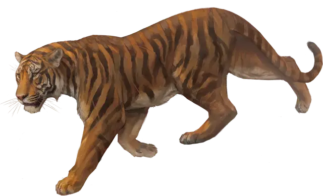

Тигр
Tiger
Большой Зверь, без мировоззрения

Класс Доспеха 12
Хиты 37 (5к10 + 10)
Скорость 40 футов
| мод | спас | ||
|---|---|---|---|
| СИЛ | 17 | +3 | +3 |
| ЛОВ | 15 | +2 | +2 |
| ТЕЛ | 14 | +2 | +2 |
| мод | спас | ||
|---|---|---|---|
| ИНТ | 3 | −4 | −4 |
| МДР | 12 | +1 | +1 |
| ХАР | 8 | −1 | −1 |
Навыки Восприятие +3, Скрытность +6
Чувства тёмное зрение 60 футов, пассивное Восприятие 13
Опасность 1 (200 опыта)
Бонус мастерства +2
Среда обитания Лес, Луг
Особенности
Тонкий нюх. Тигр совершает с преимуществом проверки Мудрости (Восприятие), полагающиеся на обоняние.
Наскок. Если тигр переместится как минимум на 20 футов по прямой к существу, а затем в том же ходу попадет по нему атакой когтем, эта цель должна преуспеть в спасброске Силы Сл 13, иначе будет сбита с ног. Если цель сбита с ног, тигр может бонусным действием совершить по ней одну атаку укусом.
Действия
Укус. Рукопашная атака оружием: +5 к попаданию, досягаемость 5 футов, одна цель. Попадание: Колющий урон 8 (1к10 + 3).
Коготь. Рукопашная атака оружием: +5 к попаданию, досягаемость 5 футов, одна цель. Попадание: Рубящий урон 7 (1к8 + 3).